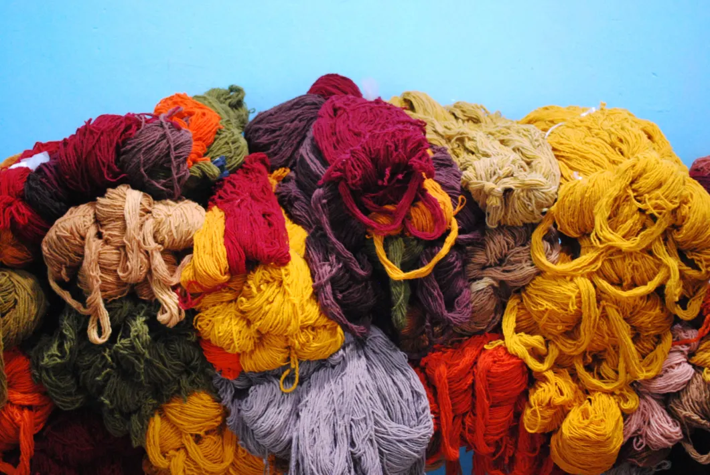

Tintes naturales
Conoce cómo se preparan los colores que se usan en el tejido.
Teotitlán del Valle, Oaxaca
Taller familiar de Fidel Cruz Lazo y María Luisa Mendoza Ruiz dedicado al tejido y los tintes naturales.
Consultas y reservas
Conoce cómo se preparan los colores que se usan en el tejido.
Consulta por las demostraciones del taller y los tapetes que hacen en Casa Cruz.
Consultá por disponibilidad y detalles.